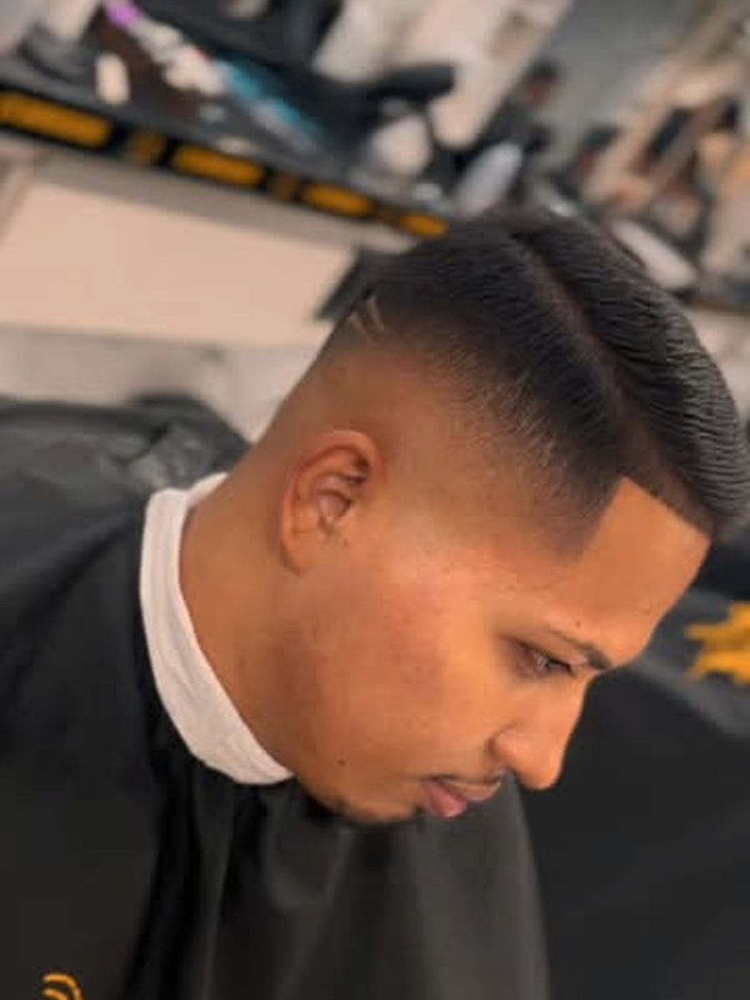
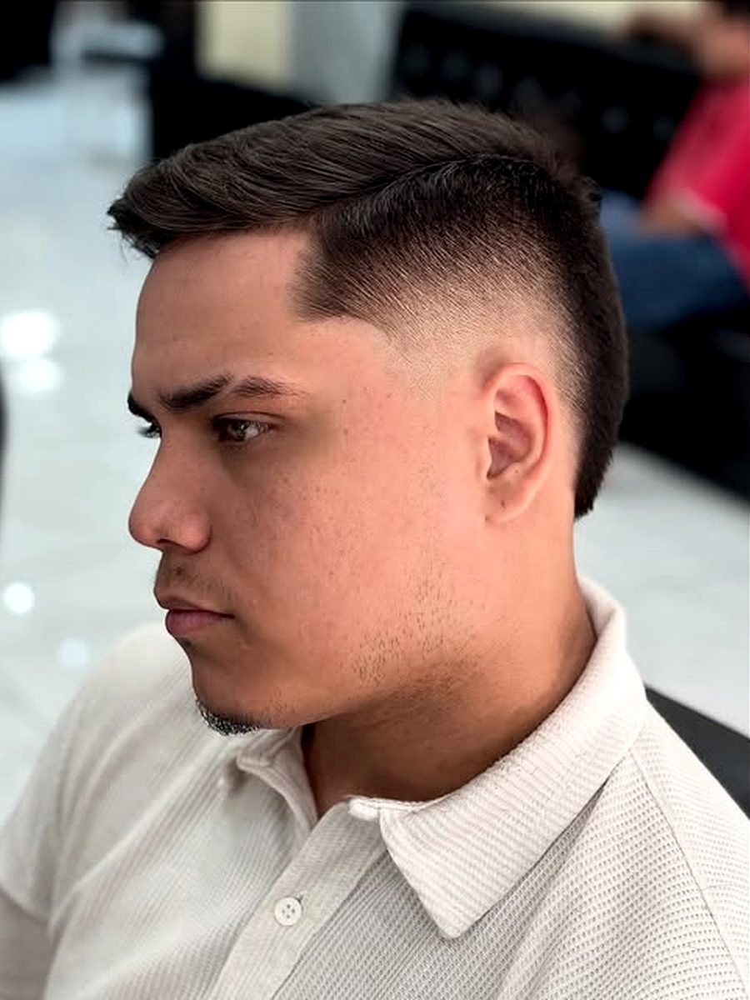
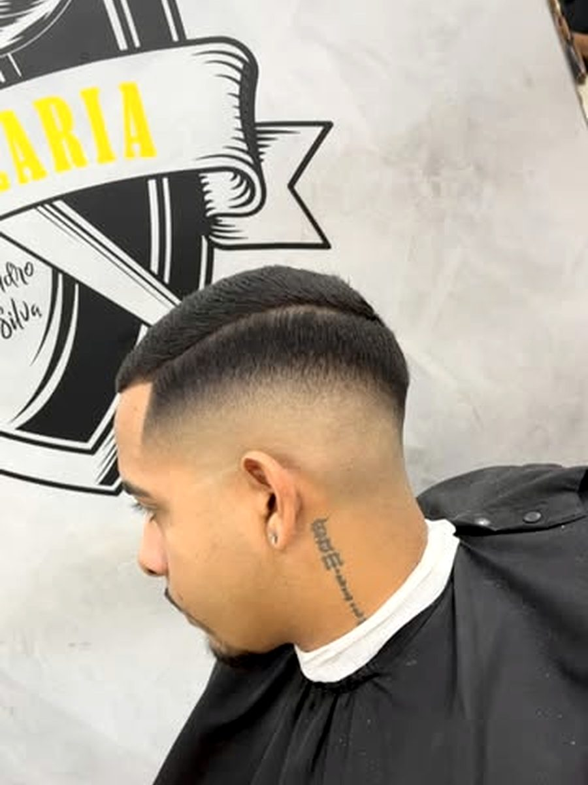
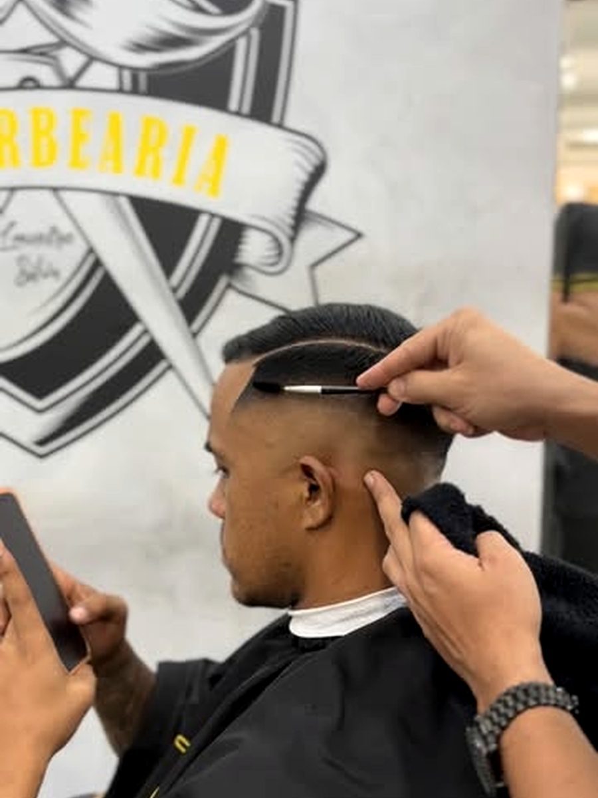
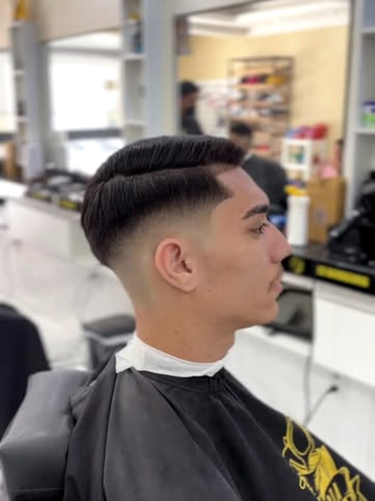
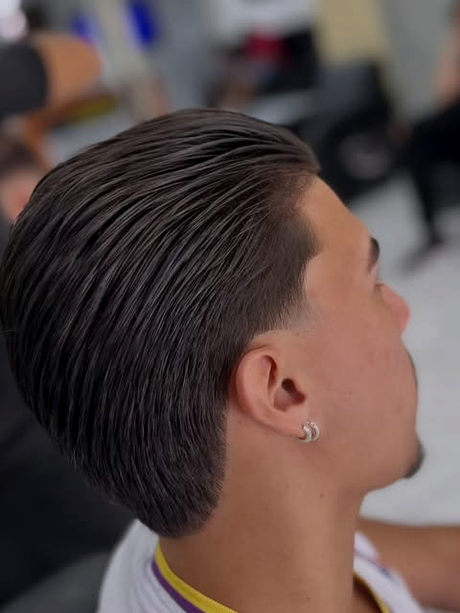
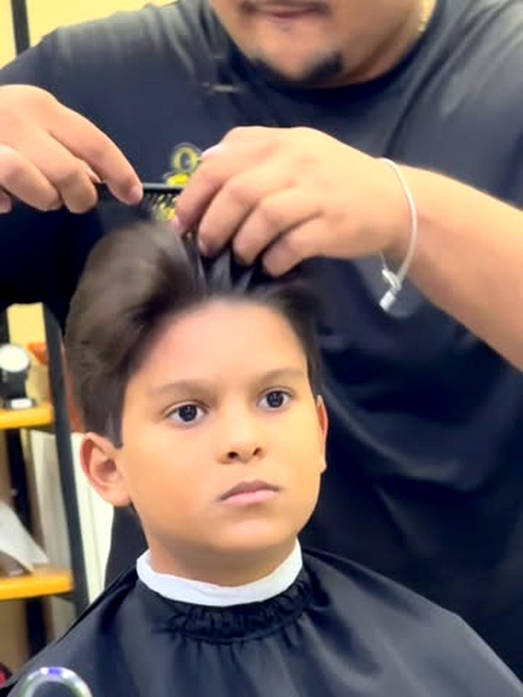
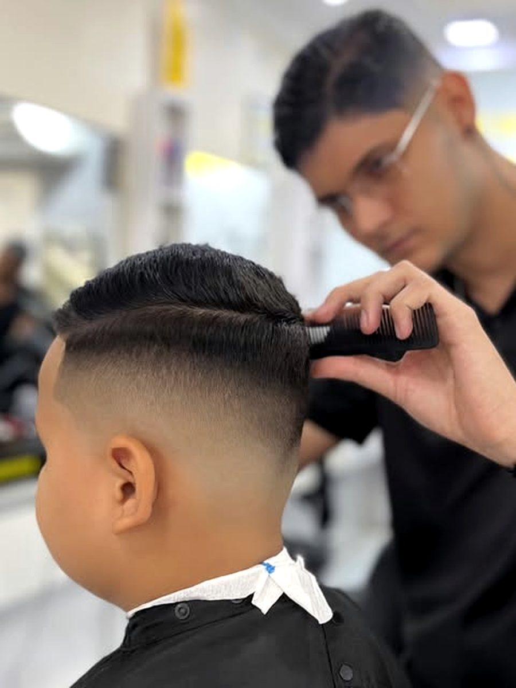
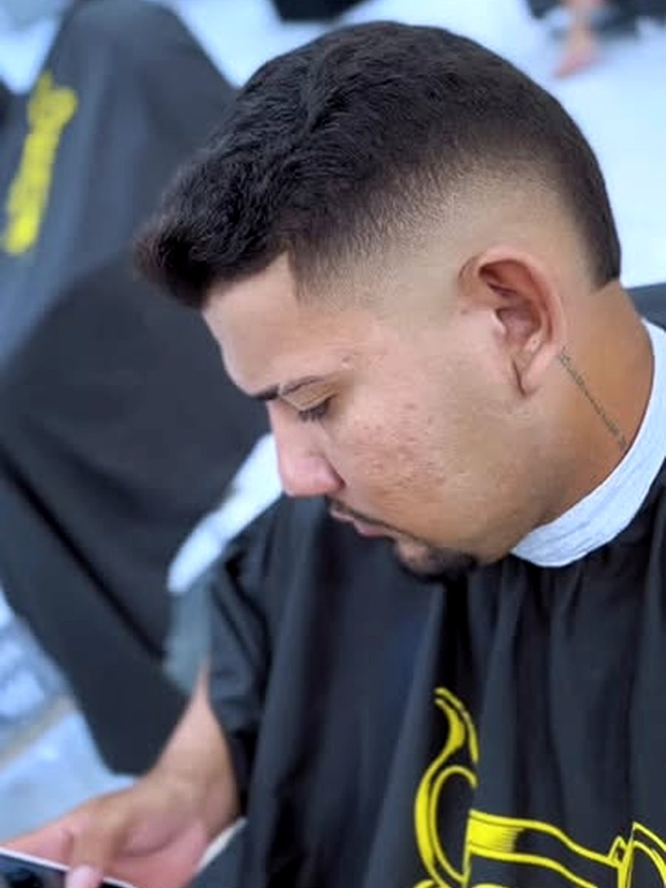

Corte e degradê
Baixo, médio, alto ou navalhado. É o carro-chefe da casa e o que mais aparece no feed.
Corte, barba e acabamento na navalha de terça a sábado. Escolha a altura do seu degradê aqui no site e mande pronta pra gente no Direct.
Baixo, médio, alto ou navalhado. É o carro-chefe da casa e o que mais aparece no feed.
Contorno, pézinho e o risco feito na navalha — a parte que decide se o corte ficou limpo.
Criança senta, escolhe no espelho e sai com o mesmo acabamento do pai. Sem pressa.
Relógio, carteira, acessório e bebida gelada ficam na prateleira da frente. Dá pra sair com o corte e o presente.
Arraste pra cima e pra baixo na lateral da cabeça — o cabelo se redesenha na altura que você deixar.
A transição começa na altura da têmpora. É o meio-termo: marca bem e continua discreto no trabalho.
Role para o lado — fotos do feed, sem retoque nosso.









Chama no Direct dizendo o dia que te serve e a altura do degradê. A gente responde com o horário que dá pra encaixar.
Av. Contorno Leste, 125 — Novo Mondubim, Fortaleza · atendimento de terça a sábado